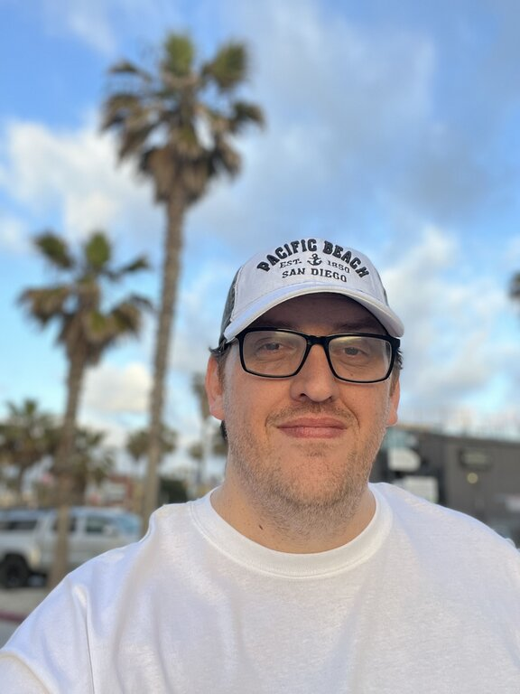

Joseph Bartholomew | WDD 130
My name is Joseph Bartholomew, but I go by Joey. I live in Ohio. I am pursuing my Software Development degree, and like to build software and come up with new ideas for software solutions. I have experience with HTML, CSS, some JavaScript, some React, some Bootstrap, GitHub, and VSCode. I’ve taken a few coding bootcamps in programming, one from Skillsoft and one from NuCamp. I also have built a software called Overtime Athletic Management, but a large portion was done by a team of oversea contractors. I’ve created an LLC business to help develop people’s ideas into websites and software but I’d like to pivot away from using the oversea contractors and do all the work myself which is why I’m trying to get my bachelors. You can see my current sites at bartdev.org and overtime.com. I also enjoy basketball and spending time with my family. I'm married and have 3 children.